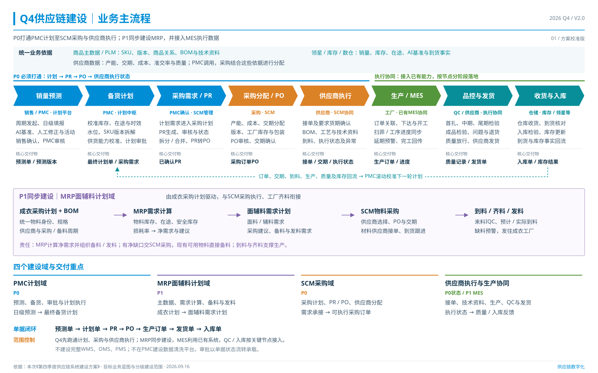
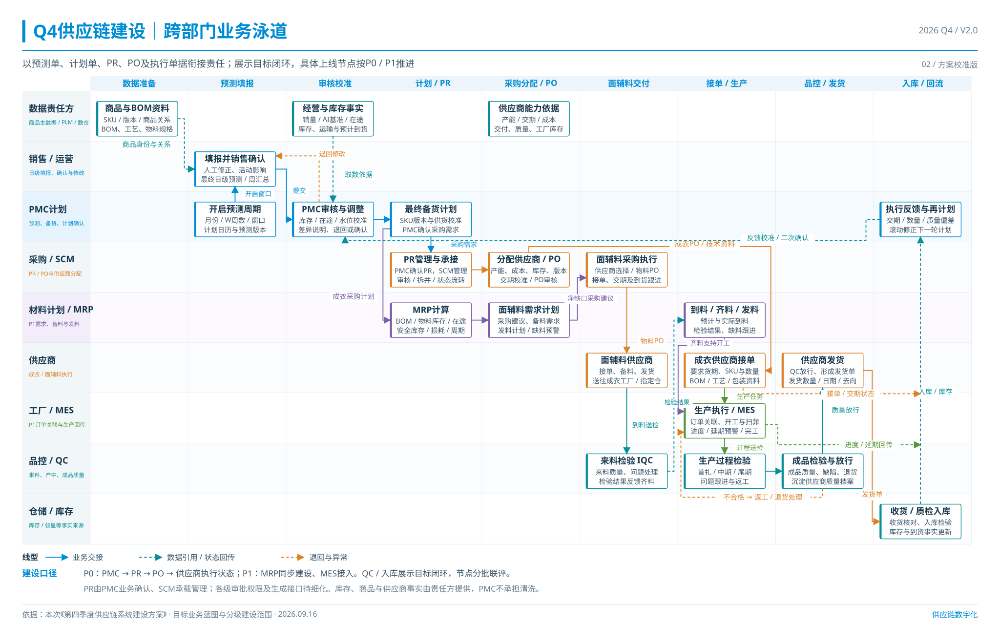

<!doctype html><html lang="zh-CN"><meta charset="utf-8"><meta name="viewport" content="width=device-width,initial-scale=1"><title>Q4供应链系统建设方案校准版 V2.0</title><style>*{box-sizing:border-box}body{margin:0;background:#edf2f5;color:#18384e;font-family:"PingFang SC","Microsoft YaHei",sans-serif}header{padding:20px 28px;background:white;display:flex;justify-content:space-between;gap:20px;flex-wrap:wrap}h1{font-size:21px;margin:0}a{color:#007cb7;text-decoration:none}nav{display:flex;gap:20px;flex-wrap:wrap}main{max-width:1850px;margin:auto;padding:24px}figure{margin:0 0 32px}img{display:block;width:100%;height:auto;background:white}figcaption{display:flex;justify-content:space-between;margin-top:12px;gap:15px;flex-wrap:wrap}</style><header><h1>Q4供应链系统建设 · 方案校准版 V2.0</h1><nav><a href="可编辑文件/Q4供应链业务主流程与泳道图_方案校准版_V2.0.pptx" download>下载可编辑PPTX</a><a href="校准说明.md">评估与校准说明</a></nav></header><main><figure><figcaption><span>01 业务主流程</span><nav><a href="01_Q4供应链业务主流程图_V2.0.png" download>高清PNG</a><a href="01_Q4供应链业务主流程图_V2.0.svg" download>SVG</a></nav></figcaption></figure><figure><figcaption><span>02 跨部门泳道</span><nav><a href="02_Q4供应链跨部门泳道图_V2.0.png" download>高清PNG</a><a href="02_Q4供应链跨部门泳道图_V2.0.svg" download>SVG</a></nav></figcaption></figure></main></html>
